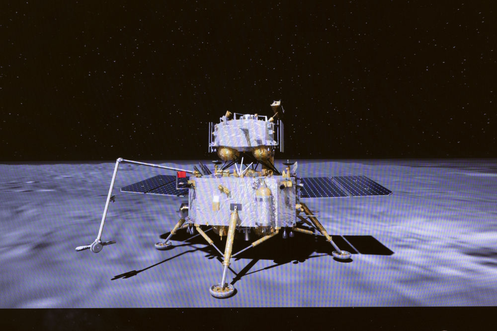
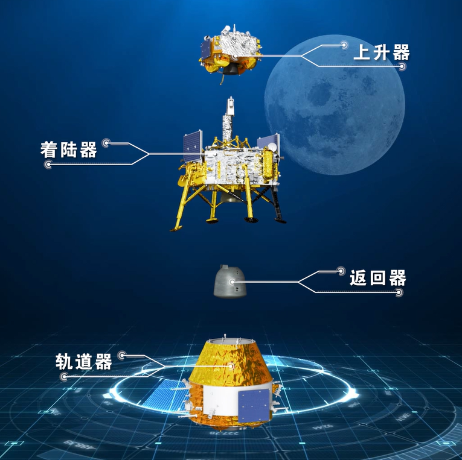
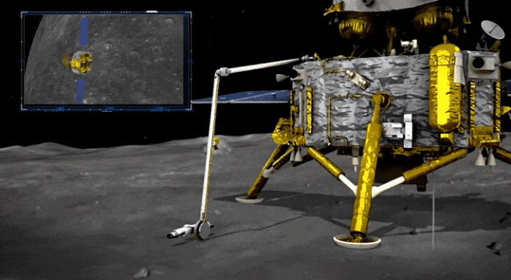
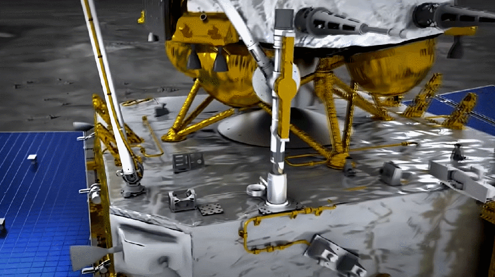

嫦娥六号是中国探月工程第四阶段的首颗探测器，中国航天在2022年立项了探月第四期工程。四期工程计划发射嫦娥六号、嫦娥七号、嫦娥八号三个探测器。
嫦娥六号探测器总重8.2吨，由轨道器、返回器、着陆器、上升器四部分组成，后续在经历地月转移、近月制动、环月飞行后，着陆器和上升器组合体将与轨道器和返回器组合体分离，轨道器携带返回器留轨运行，着陆器承载上升器择机实施月球背面预选区域软着陆，按计划开展月面自动采样等后续工作。
中国探月工程第四阶段
嫦娥六号是中国探月工程第四阶段的首颗探测器，中国航天在2022年立项了探月第四期工程。四期工程计划发射嫦娥六号、嫦娥七号、嫦娥八号三个探测器。
嫦娥六号探测器总重8.2吨，由轨道器、返回器、着陆器、上升器四部分组成，后续在经历地月转移、近月制动、环月飞行后，着陆器和上升器组合体将与轨道器和返回器组合体分离，轨道器携带返回器留轨运行，着陆器承载上升器择机实施月球背面预选区域软着陆，按计划开展月面自动采样等后续工作。

2024年5月3日（发射日）
2024年5月8日
2024年6月2日
2024年6月3日
2024年6月4日
2024年6月6日
2024年6月25日


